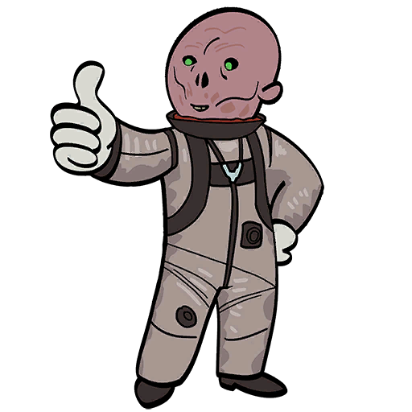
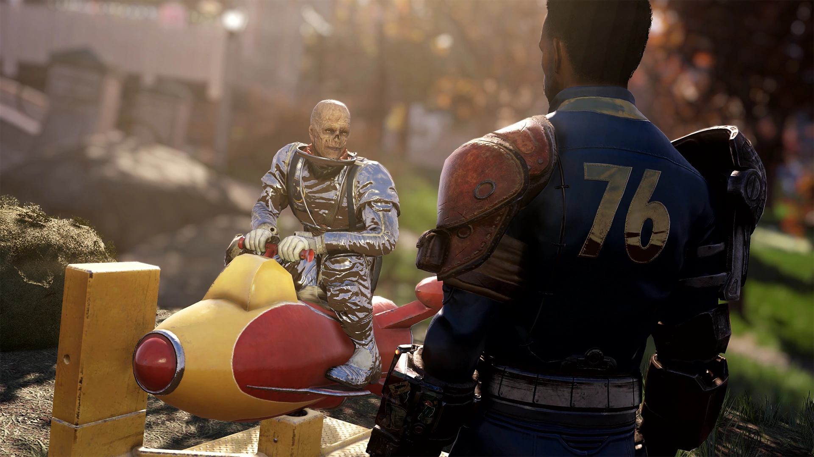
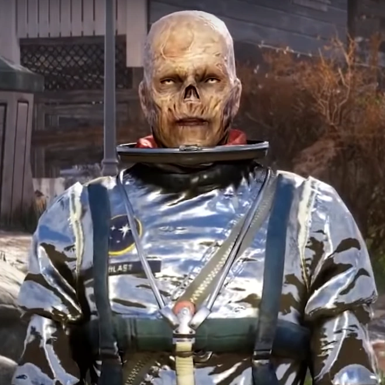
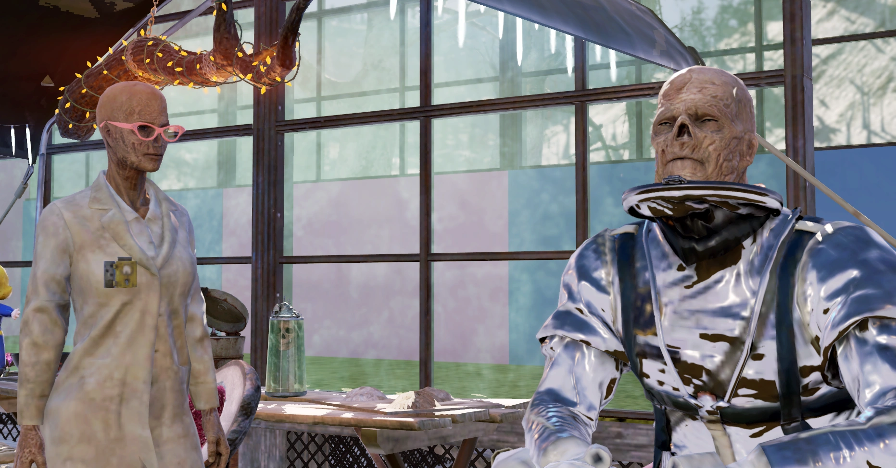
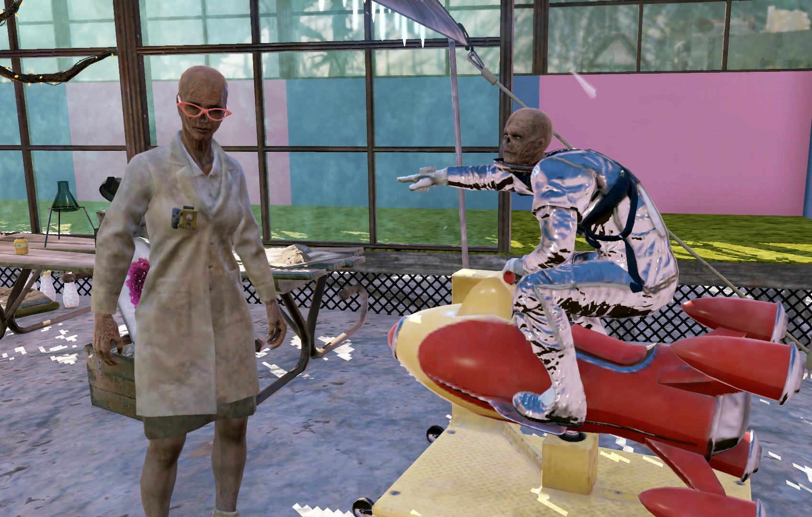
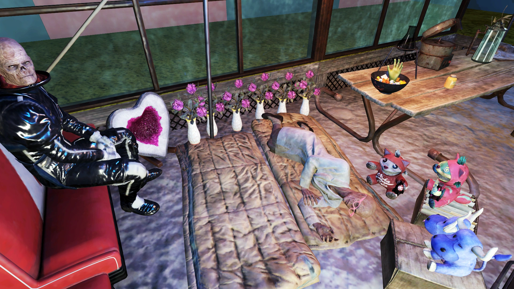

Xerxo
ゼルゾ — ゼビュロン帝国の宇宙船長を自称するグール
実際、思考は死刑に値する犯罪になるだろう。そしてもちろんその後に、一連の教育ビデオを視聴させられることになる。
ゼビュロンの死後の世界には1,757段階の地獄があるのだから、ビデオを観て自分の過ちを振り返る時間は十分にあるだろう。」
— ゼルゾ
概要
エリオット・マンフィールド、現在は「ゼルゾ」として知られる人物は、アパラチアに暮らすグールであり、プレイヤーの同居人候補である。
かつてはSF映画『銀河の彼方からの侵略者（Invaders from Beyond Our Galaxy）』で主演を務める予定だった映画俳優だったが、大戦のトラウマにより現実との接点を失い、自分が架空の「ゼビュロン帝国」から来たエイリアンの侵略者であると信じ込む妄想の世界に逃避した。
ゼルゾはシーズン7『ゾルボの復讐』のランク50報酬として解放され、『Invaders from Beyond』アップデートでプランが追加された。
背景
エリオット・マンフィールド
大戦前、エリオット・マンフィールドは2077年12月公開予定のSF映画『銀河の彼方からの侵略者』で主人公「ブラスト・ハニガン」を演じる予定だった有名な映画俳優だった。
彼は戦前の自分を利己的で傲慢だったと振り返っている。
特に記憶に残っているのは、メアリーという女性との食事の場面で、彼女よりもはるかに多くの食事を注文しておきながら、財布を忘れたと嘘をついて彼女に全額を支払わせたことだ。
また、『銀河の彼方からの侵略者』の脚本や共演者の演技の質を軽蔑しており、自分の役名を「馬鹿げている」と考え、脚本家たちと繰り返し対立した。
核の炎が降り注いだ後、マンフィールドはグールになった。
グール化のトラウマ、大量の死、社会の崩壊、そしてアルコール依存が重なり、彼は映画『銀河の彼方からの侵略者』の敵役をベースにした「ゼルゾ」というペルソナに逃避した。
ブラスト・ハニガンの衣装を身にまとったマンフィールドは、「宇宙船」（コイン式の乗り物遊具）と共にウエイストランドを旅し始めた。
年月を経るにつれ、「ゼルゾ」は新たなペルソナのために複雑で、時に支離滅裂な経歴と信条体系を構築していき、本当のアイデンティティと出自についてはますます深い否認の中に沈んでいった。
彼は時折、その奇妙な行動やグールとしての姿、そしておそらくは窃盗行為を理由に、生存者たちから嫌がらせを受けた。
2103年までにアパラチアにたどり着き、Vault 76の居住者たちの同居人となった。
「ゼルゾ」
アパラチアに到着した頃には、「ゼルゾ」のペルソナはマンフィールドの元々のアイデンティティをほぼ完全に上書きしており、マンフィールドとしての記憶は単なる「夢」として片付けられている。
彼の主張によれば、ゼルゾはゼビュロン帝国の宇宙船長にして天才的な軍事戦略家であり、父「ザーラックス」の息子、ゼビュロン艦隊の宇宙船「ヴォクスタルサ」の船長である。
艦隊は宇宙で最も高度な技術を持ち、10,000隻の戦艦を擁し、それぞれに最新の星間ミサイル技術と12人のプライベートシェフが装備されているという。
また、毎日テレパシーで交信する子供たちがゼビュロンにいると主張し、地球でのミッションのせいで子供たちの「ゾルクスボール」の初試合やレイガンの初発射、プロムなどの成長の節目を見逃してしまうことを嘆いている。
ゼルゾはまた、銀河間不動産業者としても名を馳せていると主張し、ゼビュロン帝国は実のところ不動産帝国だと明かす。
帝国は「戦争の神ザンタ」の助言により地球を征服することを決定したという。
ザンタは「デクセンバー」の25日に「いい子」と「悪い子」の惑星リストを作成し、「悪い子」の惑星は侵略の対象になるのだそうだ。
ゼルゾは偵察と鑑定のミッションのために地球に派遣されたと主張し、人間を研究し、可能であれば交配する任務を帯びているという。
特に高官との交配が求められると述べ、軍事機密を引き出すためだと説明する。
人間との交配は魅力的ではないが、帝国のための義務として受け入れているとのことだ。
また、すでに人類の「指導者」に会い、ゼビュロンの慣習に従ってその指導者を食べたと主張している。
ゼルゾは地球とミッション全般を軽蔑しており、人類を地球を台無しにしている愚か者の種族と見なしている。
しかし、地球のいくつかの側面、特にアルコールについては楽しんでいることを認めている。
「この星の食べ物は恥ずべきことだ。だが酒？ まぁ、近いうちにお前たちの飲み物すべてにゼビュロンの著作権を申請すると言っておこう」とまで述べている。
また、征服よりも地球の降伏を受け入れる用意があるとも語っている。
ゼルゾは、ミッションが完了し地球が征服された暁には、ゼビュロン人が惑星を「リノベーション」して「火星人」に倍の値段で転売する計画だと信じている。
その代金は「火星の砂」で支払われ、この砂はアンドロメダ銀河で非常に高価なのだという。
「火星の砂は原子時計よりも正確だと言われている砂時計に使われている。もちろんそれは全部詐欺だ。脳が19個もあれば、時間は実在しないと誰でもわかる」と語る。
人類は厳しい抑圧の対象となり、「思考」は死刑に値する犯罪とされ、その後1,757段階のゼビュロンの地獄で教育ビデオを視聴させられるという。
「ミッション」の範疇を超えて、ゼルゾは想像上の経歴、特にゼビュロン人の生態や帝国の文化・歴史について数多くのコメントや観察を行っている。
それらの詳細は奇妙なものからまったくの支離滅裂なものまで多岐にわたる。
例えば、ゼビュロン人はテレパシー能力を持ち、47個の胃、38個の脳、少なくとも3つの肺（「脱皮」可能）、そして複数の背中を持つと主張している。
また、地球の中心はマシュマロで地殻はキャラメルで満たされていること、回転するたびに奇妙な音が鳴ること、「雲の中にモグラ人間が住んでいる」こと、「銀河間タックスヘイヴン」であること、そしてその住民は変な匂いがすること等を主張している。
これらの信念の多くは、戦前文化の歪んだ記憶に根ざしている。
例えばクリスマスとサンタクロースを「戦争の神ザンタ」と同一視したり、SF作品を実際の出来事の記録だと確信している。
しばしば不正確ながらも、『ジ・アンストッパブルズ』、『キャプテン・コスモスの冒険』、そして最も重要な『銀河の彼方からの侵略者』など多数の作品を引用し、後者はゼビュロンによる海王星「解放」に基づく「地球人のプロパガンダ」だと見なしている。
海王星は天王星の植民地だったと説明し、地球人は事件に何の関係もないのにクレジットに名前を載せている、と嘆く。
さらにゼルゾは、日用品に架空の特性や不当な重要性を付与する傾向がある。
例えばトイレットペーパーを「ゼビュロン名誉勲章」とみなし、「本物のゼビュロン・イーグルの羽毛」で作られていると主張する。
また、自分のようなグールを「同胞のゼビュロン人」と考えているようであり、エイリアンによる「プロービング」に対する固執も見られる。
より暗い側面として、彼はアルコール依存を「古代ゼビュロンの瞑想技法」と合理化し、嘔吐を「ネガティブなエネルギーの排出」と説明している。
プレイヤーとのインタラクション
- 不死属性: あり
- 同居人: ゼルゾの宇宙船を設置可能
- 行商人: 5.56mm弾、.45弾などの弾薬、改造済みレーザーガン、プラズマガン、薬物、アルコール、バルク弾薬スクラップ、リコールキーカード回路基板
- バフ: ゼビュロニアン・フライト（ファストトラベル費用-50%、Agility+1）
※ファストトラベル費用-50%はTravel Agentパークと合算で最大約80%の削減が可能。
その他のインタラクション
ゼルゾは高品質の武器・弾薬、バルク弾薬、スクラップ素材、衣服、食料、そして豊富なアルコールと薬物を販売する。
「ゼビュロンの最高級品を、最高級価格で」と言いながら取引を持ちかけるが、すべての取引は「機密」だと主張する。
彼は自分が扱うのは「ゾルビット」という通貨のみで地球の通貨は無価値だと主張するが、他の商人と同様にキャップで決済を受け入れる。
自称「誇り高き資本主義者」であり、「お前はなんだ、共産主義者か？」と地球人に説教し、会話までホロテープに録音してオークションにかけると言い出す。
ゼルゾは同居人となったプレイヤーに「銀河間宇宙飛行の秘密」を教えると申し出る。
宇宙飛行は歩くよりも簡単で「タイムトラベルよりも楽」だと主張する。
実際にはこれは、ゼルゾが自分のガンマガンでプレイヤーの顔を撃つことを意味しており、一時的なバフ「ゼビュロニアン・フライト」を付与する。
彼はこの効果を「お前の粒子をカンガルーとオリンピック走り幅跳び金メダリストのDNAで書き換える」と説明する。
装備
- 服装: ゼルゾの宇宙服
- 武器: ガンマガン
トリビア
- ゼルゾは性別を問わずプレイヤーキャラクターとの親密な関係に前向きな姿勢を示しており、バイセクシュアルであることが示唆されている
- ゼルゾは地球上で最も知的な存在はモールマイナーだと信じている
- ゼルゾはFallout 4（およびその追加コンテンツ）で言及のみだったキャラクターのうち、Fallout 76に実際に登場した3人のうちの1人。他の2人はシャノン・リバースとデル・ウォルシュ
名言集
制作裏話
ゼルゾとの会話中、プレイヤーキャラクターは「私は、個人的にですが、新しいゼビュロンの支配者たちを歓迎します」と言うことができる。
これは『ザ・シンプソンズ』のエピソード「宇宙のホーマー」で、ニュースキャスターのケント・ブロックマンが巨大なエイリアンの蟻が地球を侵略していると信じて「私は、個人的にですが、新しい昆虫の支配者たちを歓迎します」と発言したシーンへのオマージュである。
登場作品
ゼルゾはFallout 76のNight of the Mothアップデートに登場する。
大戦前のエリオット・マンフィールドはFallout 4の追加コンテンツ『Far Harbor』で初めて言及された。
ギャラリー






ゼルゾはFallout 76の同居人の中でも、とにかく突き抜けたコメディキャラクターですよね〜。
大戦前は「ブラスト・ハニガン」なんていう80年代のB級SF映画の主人公みたいな役を演じる予定だった映画俳優が、核戦争でグール化して、トラウマと酒に溺れるうちに「自分は宇宙人の侵略者だ」って本気で信じ込むようになったっていう設定がもう天才的。
ゼビュロン帝国の設定が何層にも積み重なっていて、「47個の胃」「38個の脳」「脱皮できる肺」とか、明らかに矛盾だらけなんだけど本人は完全に真顔で語るのがたまらなく面白い。
特に好きなのが「不動産帝国」のくだりですね。帝国が実は不動産業で、地球をリノベして火星人に転売するっていう…もうスケールがおかしいw
「戦争の神ザンタがデクセンバー25日にいい子リストと悪い子リストを作る」って、これ完全にクリスマスとサンタクロースの記憶が歪んでるやつじゃないですか。
こういう「戦前文化の断片がグールの狂気を通して歪められて再構成される」っていう描写は、Falloutの世界観の深さを感じさせてくれます。
トイレットペーパーを「ゼビュロン名誉勲章」として授与するシーンなんて、プレイヤー側のツッコミ選択肢「これトイレットペーパーでしょ」に対して「お前の未熟な目にはそう見えるだけだ」って返してくるのが完璧すぎる。
宇宙飛行のレッスンと称してガンマガンで顔を撃ってくるのも最高ですよねw 「ゼビュロンのテクノロジーはすべて顔の穴を通じて提供される」って、理屈としては一応筋が通ってるのが余計に笑えます。
でもSF映画の脚本家と揉めた記憶とか、メアリーとの食事のエピソードとか、ふとした瞬間にエリオット・マンフィールドとしての記憶が漏れ出してくる瞬間は、コミカルな外見の裏にある深い悲しみを感じさせて胸が締め付けられます。
This article was created by translating and editing Xerxo from Nukapedia: The Fallout Wiki.
Licensed under the Creative Commons Attribution-Share Alike License (CC BY-SA 3.0).
コミュニティ維持のため、寄付を受け付けております。
> COMMENTS